이전 V239의12슬롯/11고유표본/9그룹을 그대로 사용했습니다. 새 점수로 사례를 선택하지 않았습니다. 새 baseline은 기존 V239 TREAT86054이며 옛76098 CONTROL과 다릅니다. SOURCE DEV는 이미 노출·재사용됐고 대표성·성능 향상·가림 원인·native gold의 증거가 아닙니다.
q/L/native/U는 원값입니다. 마커·표시 확대는 입력 변경이 아닙니다. context PNG는 기존 F32 context를 표시용으로 양자화한 이미지이며 원 F32 입력을 재생성하지 않았습니다. YCB native는 UNKNOWN이고 associated-r 교사와 literal q 상태를 구분합니다. 새 GT/reference/owner/pose overlay와 모델 forward는 없습니다.
사례 CSV · 사례 metadata · overview
교사 D; baseline D (-8.166225), treatment D (-5.279293); BOTH CORRECT.
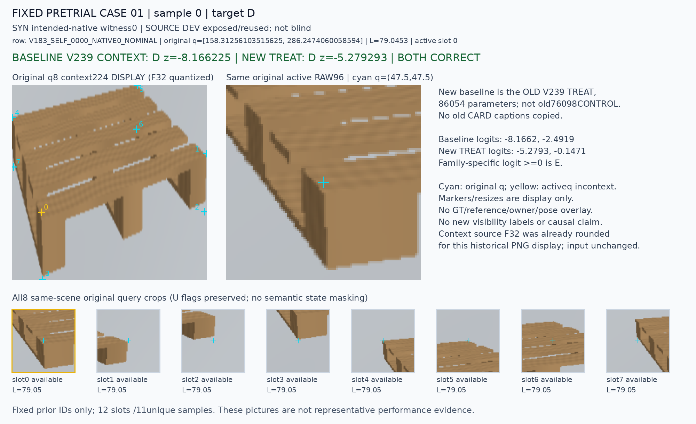
교사 D; baseline E (+1.538288), treatment E (+1.296825); BOTH WRONG.
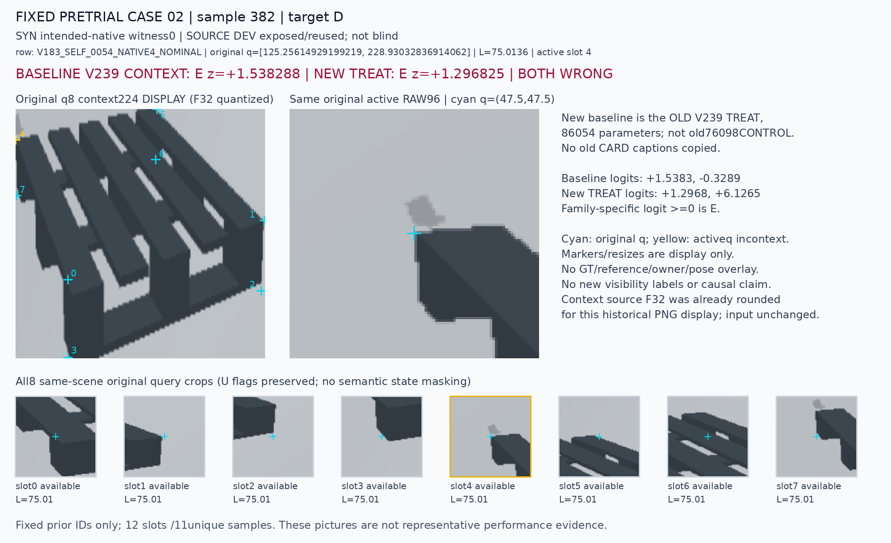
교사 E; baseline E (+7.448371), treatment E (+6.638297); BOTH CORRECT.
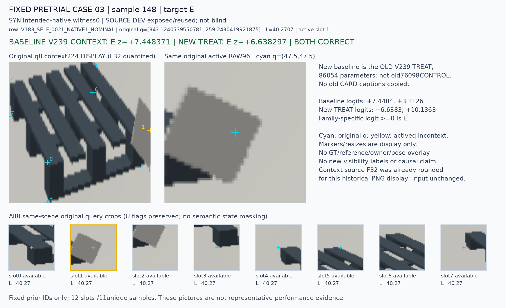
교사 E; baseline D (-0.739294), treatment D (-1.023371); BOTH WRONG.
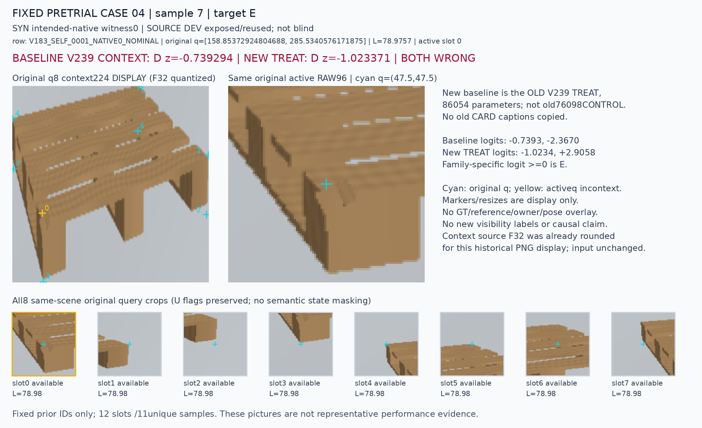
교사 D; baseline D (-8.820555), treatment D (-0.198336); BOTH CORRECT.
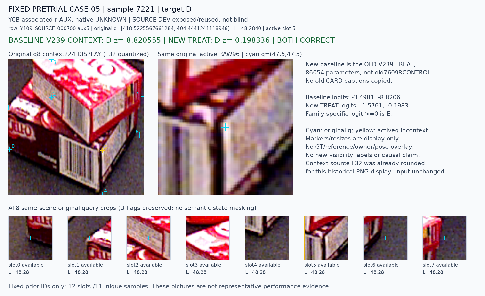
교사 D; baseline E (+0.112544), treatment E (+1.172878); BOTH WRONG. 중복 sample입니다.
교사 E; baseline E (+0.076867), treatment D (-1.073606); DAMAGED.
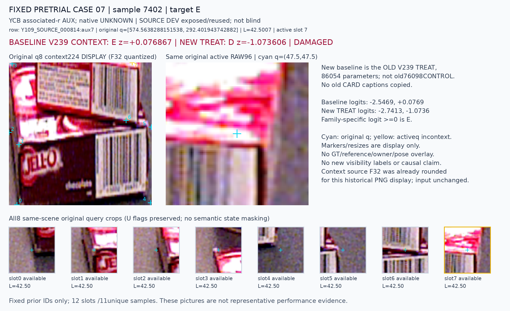
교사 E; baseline D (-10.100302), treatment D (-3.926741); BOTH WRONG.
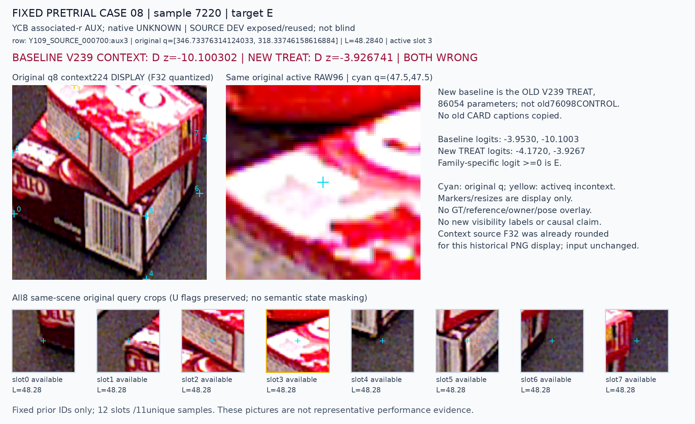
교사 D; baseline D (-0.009088), treatment E (+0.903265); DAMAGED.
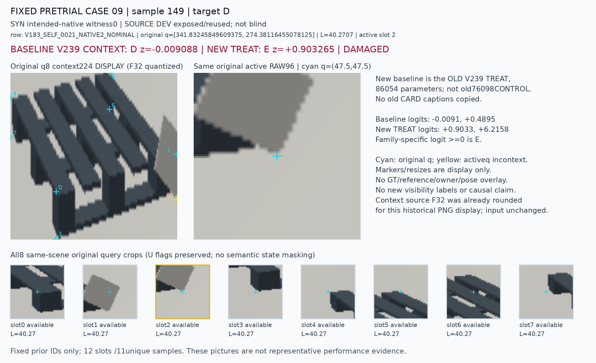
교사 D; baseline E (+0.075550), treatment D (-0.381327); RECOVERED.
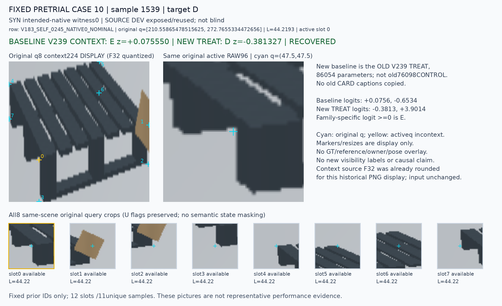
교사 D; baseline D (-2.173328), treatment E (+5.366238); DAMAGED.
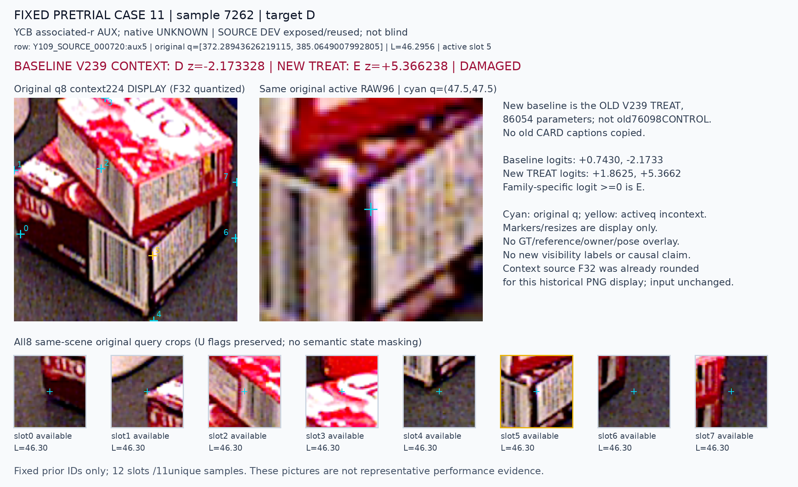
교사 D; baseline E (+0.112544), treatment E (+1.172878); BOTH WRONG. 중복 sample입니다.
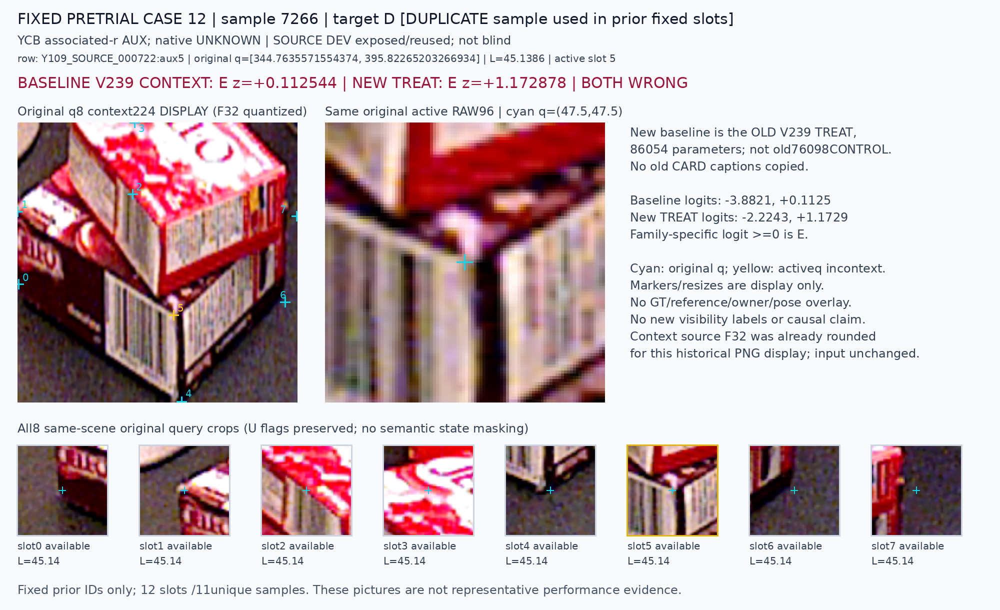